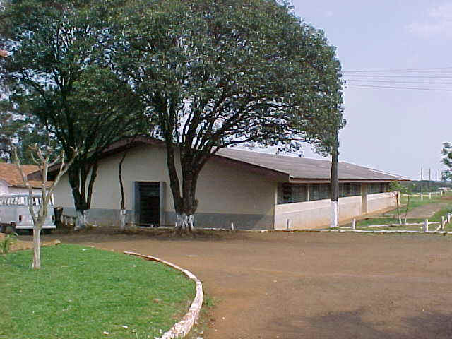
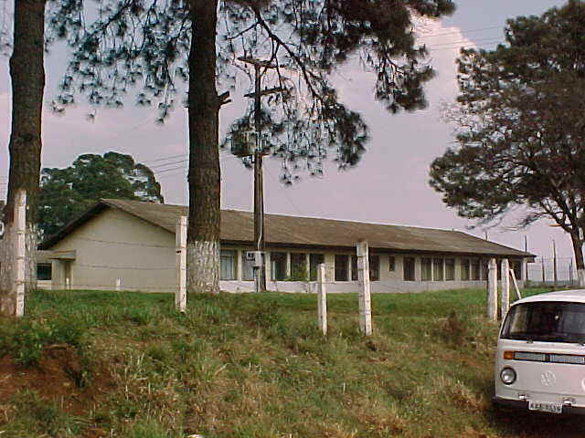

Alojamentos

Os alojamentos estão em dois pavilhões um abriga os dormitórios e instalações sanitárias dos alunos do ensino médio, quarto de inspetor e depósito de material de limpeza. No outro estão os dormitórios e instalações sanitárias dos alunos do curso pós-médio, instalações sanitárias e armários dos semi internos, alojamento dos técnicos e biblioteca.
No primeiro pavilhão(Alojamento A) são dezessete repartições, sendo 14 alojamentos, um quarto com banheiro para inspetor, um banheiro coletivo para os alunos e um depósito de materiais de limpeza utilizados pelas zeladoras para manutenção dos banheiro e alojamentos. Os quartos, conforme seu tamanho, são ocupados por até 12 alunos que tem uma cama e um armário de lata para acomodar seus pertences. Hoje a maioria dos alojamentos possuem televisão e alguns tem acessórios como: forno elétrico e até geladeira.

Alojamento A
No segundo pavilhão (alojamento B) são 5 alojamentos, um depósito de materiais esportivos, usados na educação física e lazer dos alunos, um quarto com banheiro, ocupado pelos técnicos que moram no Colégio, uma sala com armários para semi-internos, um depósito de materiais diversos, dois banheiros sendo um para os alunos do pós-médio e outro para os alunos semi-internos e a biblioteca com saída independente do alojamento.

Alojamento B
As alunas possuem uma sala com banheiro e armários no prédio principal, próximo ao auditório, sendo todas semi-internas. O Colégio não oferta internato feminino.